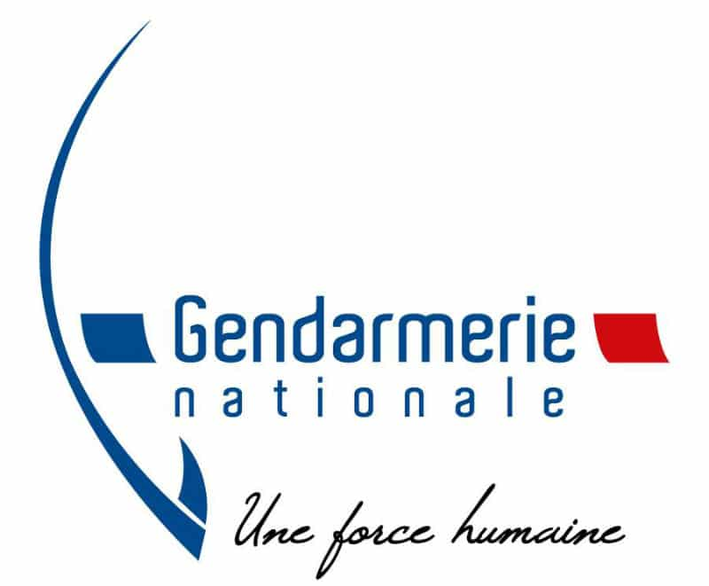
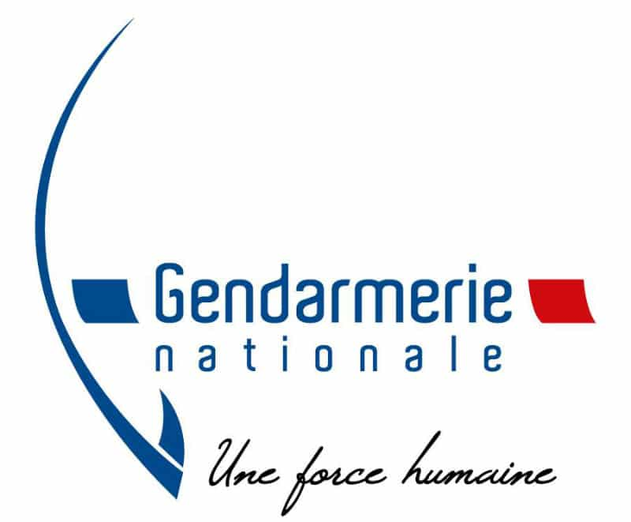
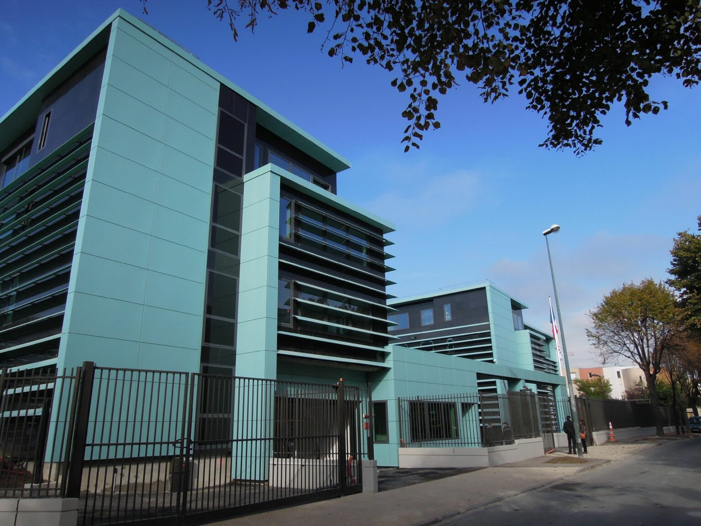
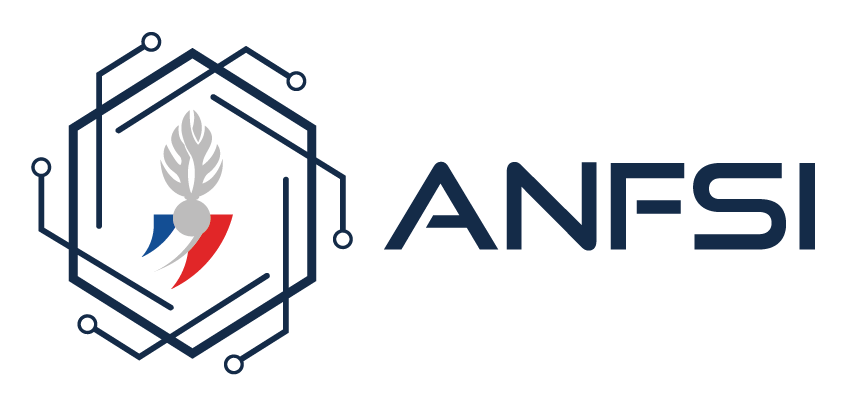

MISSION TECHNIQUE À LA DGGN
Développement du site Compte Candidat
Yann EDIKEU
2ème année cycle ingénieur - ESIEA
Janvier 2025 - Juin 2025
Maître d'apprentissage : Lieutenant-colonel Josvah ANDRIAMANAMPISOA
Tutrice académique : Sabrina FATHI
Plan de la présentation
- Mise en contexte : La DGGN et l'ANFSI
- Mon service : La 2SIRHGN
- Ma mission : Le projet Sélection
- Dimensions techniques de la mission
- Intégration FranceConnect : un défi personnel
- Méthodologie agile et outils collaboratifs
- Montée en compétences et bilan humain
- Conclusion et perspectives

La Direction Générale de la Gendarmerie Nationale
- Force armée présente sur 95% du territoire français
- Lieu de haut commandement à Issy-les-Moulineaux
- 1500 civils et militaires sur un site de 22 000 m²
Missions :
Rassurer et protéger
Enquêter et interpeller
Sécuriser et maintenir l'ordre

L'Agence du Numérique des Forces de Sécurité Intérieure
- Créée en 2023, 500 personnes
- Modernisation des technologies Police/Gendarmerie
- 6 directions principales
- Direction des Applications d'Appui au Commandement (DAAC)
La 2SIRHGN - Section des Systèmes d'Information RH
- Département des Systèmes d'Information de Soutien (DSIS)
- Développement et maintenance d'Agorha (SIRH central)
- Sites web : Minotaur.fr (réservistes), Recrutement en ligne
Le Projet Sélection : Modernisation du Recrutement
PROBLÉMATIQUE :
- Objectifs de recrutement ambitieux (doublement visé d'ici 2027)
- Site actuel vieillissant (Zend Framework 2006)
- Besoins d'amélioration : accessibilité, interactivité, suivi candidat
SOLUTION :
- Portail candidat externe (Compte Candidat)
- Back-office gestionnaire intégré à Agorha
- Parcours candidat fluide et moderne
L'équipe de développement
- Chef de projet : Capitaine Tony Morelet
- Tech leads : Adjudant-chef Maxime Paintendre (web), Alexandre Fink (back-office)
- Développeurs SAP : Adjudants Charles Peson, Guillaume Bourliataud
- Développeurs PHP : Adjudant Jonathan Perrin + 4 apprentis()
- UX Designer & Product Owner: Nicolas GRANDJEAN
Stack Technique et Outils
BACKEND
- PHP 8 / Symfony 6
- PostgreSQL
- API Platform (APIs RESTful)
FRONTEND
- HTML5/CSS3, JavaScript, Vue.js
- DSFR (Design Système État Français)
- Figma (maquettes)
ENVIRONNEMENT
- Docker (conteneurisation)
- PHPStorm/VS Code, GitHub Copilot
- GitLab (CI/CD), Jira/Confluence, Slack
Intégration FranceConnect : Un Défi Personnel
CONTEXTE
- Dispositif d'identification numérique de l'État
- Alternative aux comptes classiques
- Sécurité gouvernementale
MES RÉALISATIONS
- Étude de la documentation ANTS
- Implémentation OAuth 2.0
- Gestion des tokens JWT
- Tests en environnement de développement
- En attente des clés de production
COMPÉTENCES ACQUISES
- Protocoles d'authentification sécurisée
- APIs gouvernementales
- Normes eIDAS
Méthodologie Agile et Outils Collaboratifs
SCRUM ADAPTÉ
- Sprints de 2 semaines
- Daily meetings, Sprint planning, Revues, Rétrospectives
ORGANISATION
- MOA : BRCE + CRJ (clients finaux)
- AMOA : MSIA (traduction besoins/technique)
- MOE : 2SIRHGN (développement)
WORKFLOW GIT
- Branches protégées (develop/master)
- Merge requests avec revues de code
- 3 environnements (dev/preprod/prod)
Mes Contributions Techniques
DÉVELOPPEMENT
- Fonctionnalités complètes de bout en bout
- Corrections post-audit sécurité
- Résolution de bugs et régressions
PROCESSUS
- Workflow GitLab maîtrisé
- Revues de code collaboratives
- Documentation technique
PROGRESSION
- D'intégration front-end à fonctionnalités complexes
- Autonomie croissante sur les tâches critiques
Montée en Compétences Techniques
AVANT LA MISSION
- Connaissances limitées en PHP
- Expérience basique développement web
ACQUIS DURANT LA MISSION
- Maîtrise PHP/Symfony (MVC, services, routing)
- Sécurité web et OAuth 2.0
- Workflow Git professionnel
- Méthodologie agile (Scrum)
- Compréhension enjeux secteur public
TRANSFORMATION
- De code "qui fonctionne" à code professionnel
- Qualité, lisibilité, maintenabilité
Dimensions Humaines et Adaptation
ENVIRONNEMENT MILITAIRE
- Hiérarchie structurée (adjudant-chef au colonel)
- Rigueur, confidentialité, procédures
- Culture du service public
COLLABORATION
- Profils variés (SAP, chefs de projet, métier, UX)
- Communication adaptée selon interlocuteurs
- Travail en équipe agile
RSE
- Accessibilité numérique (RGAA)
- Composants DSFR pour inclusion
- Responsabilité sociale du développement
Bilan de ma Mission Technique
RÉUSSITES TECHNIQUES
- Intégration FranceConnect opérationnelle
- Maîtrise stack Symfony/PostgreSQL
- Adoption workflow professionnel
RÉUSSITES HUMAINES
- Intégration équipe militaire/civile
- Autonomie progressive sur projets critiques
- Adaptation culture institutionnelle
IMPACT PROJET
- Contribution modernisation recrutement GN
- Amélioration expérience candidats
- Outils gestionnaires optimisés
Perspectives et Conclusion
ACQUIS PERSONNELS
- Compétences techniques affirmées
- Expérience projet complexe
- Vision claire carrière future
INTÉRÊT CONFIRMÉ
- Projets numériques à impact sociétal
- Secteur public et modernisation
- Développement au service de l'intérêt général
SUITE
- Prêt pour prochaines étapes alternance
- Projet de fin d'études (5ème année)